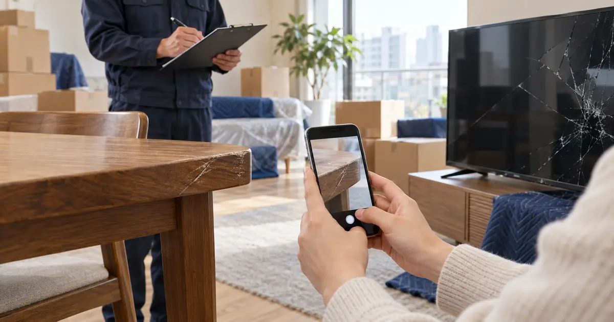
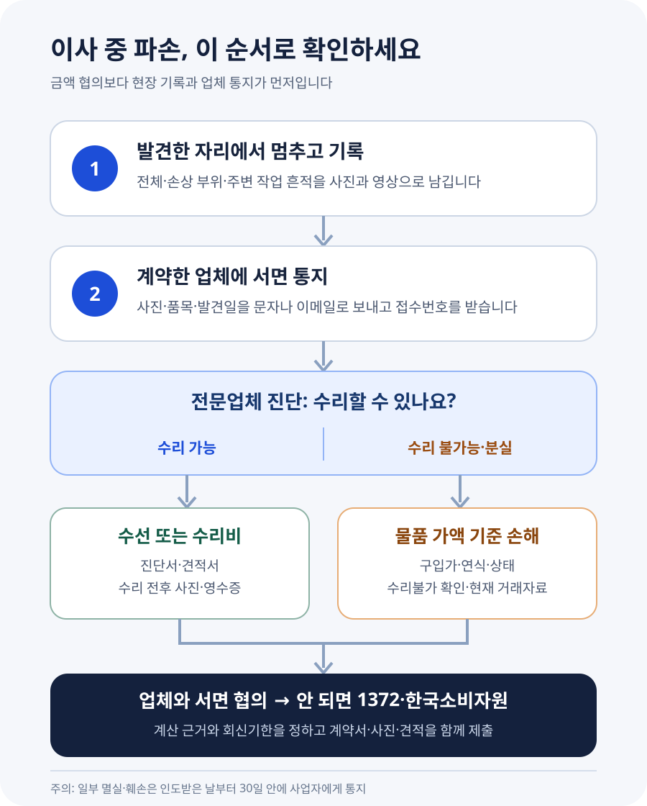

이사하다 가구가 긁히거나 TV가 깨지면 얼마까지 보상받을 수 있을까?

이사업체가 물건을 깨뜨렸다고 해서 새 제품 가격을 무조건 받는 것도, 업체가 “보험사와 이야기하라”고 했다고 기다리기만 하는 것도 아닙니다. 현장에서 사진·영상과 직원 확인을 남기고 업체에 즉시 서면으로 알리세요. 표준약관상 수선이 가능하면 수선이 우선이고, 수선할 수 없으면 약정한 인도일과 도착장소에서 그 물건이 가진 가액을 기준으로 손해액을 산정합니다. 일부 멸실·훼손은 물건을 인도받은 날부터 30일 안에 업체에 통지하지 않으면 약관상 책임이 소멸할 수 있으므로, 금액 합의가 끝나지 않았더라도 파손 사실부터 기한 안에 알려야 합니다.
파손을 발견했다면 정리하거나 버리기 전에 기록하세요
이사가 끝날 무렵 식탁 모서리의 깊은 흠집이나 TV 화면의 금을 발견하면 “기사님이 봤으니 회사에도 전달되겠지”라고 생각하기 쉽습니다. 그러나 현장 직원이 작업팀인지, 계약한 사업자의 직원인지, 회사에 어떤 내용으로 보고했는지는 별개입니다. 소비자가 다시 설명할 수 있도록 스스로 자료를 남겨야 합니다.
- 손상 부위를 가까이와 멀리서 촬영합니다. 흠집만 크게 찍지 말고 제품 전체, 놓인 위치, 포장재와 주변 작업 흔적까지 찍습니다.
- 작동 여부를 영상으로 확인합니다. TV·냉장고·세탁기처럼 외관이 멀쩡해도 기능 문제가 생길 수 있는 제품은 전원과 증상을 짧게 기록합니다. 안전상 위험하면 전원을 켜지 않습니다.
- 현장 직원에게 함께 확인해 달라고 합니다. 계약서나 작업확인서에 품목·손상 부위·발견 시각을 적고, 어렵다면 직원에게 보낸 문자와 답변을 보관합니다.
- 계약한 업체에도 바로 알립니다. 전화만 하지 말고 문자·이메일처럼 발송일과 내용이 남는 방법으로 사진을 보냅니다.
- 합의 전에는 임의로 버리거나 수리하지 않습니다. 급히 수리해야 한다면 업체에 먼저 알리고 수리 전 사진, 진단서·견적서, 영수증과 교체 부품을 챙깁니다.
바닥·벽·문틀이 찍힌 경우도 같습니다. 이사화물 자체가 아니라 새집 시설이 손상된 것이므로 입주 전 사진, 손상 발생 장면, 관리사무소나 임대인의 확인을 함께 남기면 이사 전부터 있던 흠집인지 다투는 일을 줄일 수 있습니다.
계약서가 있다고 자동 보상되는 것은 아니지만, 업체가 무조건 빠져나갈 수도 없습니다
공정거래위원회 이사화물 표준약관 제14조는 사업자나 작업자가 포장·운송·보관·정리 과정에서 주의를 게을리하지 않았음을 증명하지 못하면 멸실·훼손·연착 손해를 배상하도록 정합니다. 포장이사라면 업체가 물건의 종류와 운송 조건에 맞게 포장할 의무도 집니다. 단순히 “원래 낡아 있었다”거나 “작업자가 개인적으로 한 일”이라고 말하는 것만으로 책임이 사라지는 구조는 아닙니다.
반대로 모든 흠집을 업체 책임으로 볼 수도 없습니다. 약관 제16조는 물건 자체의 결함이나 자연적 소모, 물건의 성질에 따른 변색·부패, 천재지변 같은 사유를 면책 사유로 둡니다. 일반이사에서 소비자가 직접 부적절하게 포장한 경우처럼 소비자 쪽 사정도 따져 볼 수 있습니다. 그래서 이사 전 사진과 계약한 서비스가 포장이사인지 일반이사인지가 중요합니다.
표준약관은 공정거래위원회가 사용을 권장하는 기준입니다. 실제 계약서에 어떤 약관이 편입됐는지 먼저 확인해야 합니다. 다만 사업자가 현장 인력을 쓰거나 다른 운송수단을 이용했다는 이유로 계약상 사업자 책임이 곧 없어지는 것은 아닙니다. 보상 창구는 우선 계약서에 적힌 사업자입니다.
수리할 수 있으면 수리, 수리할 수 없으면 그때의 가액을 봅니다
표준약관 제14조의 기준은 비교적 분명합니다. 훼손된 물건을 수선할 수 있으면 업체가 수선하고, 수선이 불가능하면 약정된 인도일과 도착장소에서의 물품 가액을 기준으로 손해액을 산정합니다. 공정거래위원회 고시인 소비자분쟁해결기준도 이사화물의 멸실·파손·훼손 피해는 사업자가 직접 배상하고, 피해 물품 보험금이 지급됐다면 그 금액을 뺀 나머지를 배상하도록 안내합니다.
| 손해 상태 | 먼저 확인할 보상 기준 | 준비할 자료 |
|---|---|---|
| 가구 흠집·부품 파손 등 수리 가능 | 수선 또는 합리적인 수리비 | 제조사·수리업체 진단과 견적, 전후 사진 |
| TV 패널 파손 등 수리 불가능 | 인도일·도착지에서의 물품 가액을 기준으로 한 손해 | 구입 영수증, 모델명·제조연월, 사용기간, 중고 시세, 수리불가 확인 |
| 상자나 물품 일부 분실 | 분실한 물품의 가액 | 이사 전 목록·사진, 구매내역, 포장 수량과 인수 확인 |
| 바닥·벽·문틀 손상 | 원상회복에 필요한 손해 | 입주 전후 사진, 보수 견적, 임대인·관리사무소 확인 |
| 파손과 함께 배송도 연착 | 파손 보상과 약관상 연착 손해를 각각 검토 | 약정 시각, 실제 완료 시각, 계약금과 실제 손해 자료 |
‘가액’은 곧 새 제품 판매가라는 뜻이 아닙니다. 같은 모델의 구입가, 사용기간과 상태, 현재 거래가격, 수리 가능성과 수리비 등을 놓고 사고 당시 가치와 실제 손해를 판단합니다. 정부 기준에 “TV는 매년 몇 퍼센트씩 무조건 깎는다”는 단일 이사 보상률이 정해져 있는 것은 아닙니다. 업체가 임의의 감가율을 제시하면 계산 근거와 적용 자료를 요청하세요.
반대로 오래된 물건이라는 이유로 수리비가 전혀 인정되지 않는다고 단정할 수도 없습니다. 수리가 가능한 손상이라면 먼저 수선 기준을 확인해야 합니다. 업체가 새 제품 교환만 제시하거나 소비자가 새 제품 전액만 요구하기보다, 제조사나 전문 수리업체의 진단으로 수리 가능 여부부터 확정하는 편이 분쟁을 줄입니다.

4년 쓴 TV 화면이 깨졌다면 무엇을 계산할까요?
4년 전 180만원에 산 TV가 이사 직후 깨졌다고 가정해 보겠습니다. 이 사례에서 곧바로 “180만원 전액”이나 “중고가의 절반”이라고 결론 내릴 수는 없습니다. 먼저 제조사 서비스센터에서 패널 교체가 가능한지, 수리비가 얼마인지 확인합니다. 수리 가능하고 수리 뒤 기능·외관이 회복된다면 수리 또는 수리비가 우선 기준입니다.
부품 단종 등으로 수리가 불가능하다면 구입 영수증, 정확한 모델명, 제조연월과 사용기간, 이사 전 작동 영상, 같은 모델 또는 성능·연식이 비슷한 제품의 현재 거래자료를 모읍니다. 신제품 가격만 제출하면 사고 당시 가치와 거리가 있을 수 있고, 가장 낮은 중고 매물 하나만으로도 적정 가액을 단정하기 어렵습니다. 여러 자료가 같은 범위를 가리키도록 만드는 것이 중요합니다.
표준약관 제14조 제3항은 업체나 작업자의 고의·중대한 과실로 손해가 생겼거나 소비자가 실제 손해액을 입증한 경우 민법 제393조에 따라 배상하도록 정합니다. 다만 TV 파손 때문에 숙박비나 업무 손실까지 생겼다는 주장처럼 파손 물품 밖의 손해는 실제 발생, 인과관계와 예견 가능성을 별도로 입증해야 합니다. 영수증 없이 둥근 금액을 더하는 방식은 설득력이 약합니다.
30일은 합의를 끝내는 기한이 아니라 파손 사실을 알리는 기한입니다
표준약관 제18조에 따르면 이사화물의 일부 멸실 또는 훼손은 물건을 인도받은 날부터 30일 안에 그 사실을 사업자에게 통지하지 않으면 사업자의 손해배상책임이 소멸합니다. 멸실·훼손·연착 책임은 원칙적으로 인도받은 날부터 1년이 지나면 소멸하고, 전부 멸실은 약정 인도일부터 계산합니다. 업체나 작업자가 일부 멸실·훼손 사실을 알면서 숨겨 인도한 경우에는 별도 규정이 있습니다.
따라서 30일 안에 수리와 보상금까지 모두 합의해야 한다는 뜻은 아닙니다. 파손 물품, 손상 부위, 발견일, 요구사항을 업체가 확인할 수 있게 통지하는 것이 먼저입니다. 전화 상담만 했다면 “오늘 통화한 내용과 같이”라는 문구로 사진과 함께 문자나 이메일을 다시 보내세요. 금액이 크거나 업체가 수령 자체를 부인하면 내용증명도 검토할 수 있습니다.
사업자에게 사고증명서도 요청할 수 있습니다. 표준약관 제19조는 운송 중 멸실·훼손·연착이 발생한 경우 고객의 요청이 있으면 사고 발생일부터 1년에 한해 사업자가 사고증명서를 발행하도록 정합니다. 직원 확인서나 보험 접수번호만 받고 끝내지 말고 계약한 업체의 사고 접수 내용도 확인하세요.
이사 전에는 고가품 목록과 ‘멀쩡한 상태’를 남겨 두세요
손해가 생긴 뒤 가장 자주 막히는 부분은 “이사 전에 이미 깨져 있지 않았나”와 “그 물건이 실제로 있었나”입니다. 모든 살림을 촬영할 필요는 없지만 TV, 냉장고, 세탁기, 안마의자, 원목가구처럼 수리비가 큰 물건은 전원과 외관이 한 화면에 보이도록 촬영해 두면 좋습니다. 상자에는 번호를 붙이고, 고가 물품이 든 상자의 번호와 봉인 상태를 남깁니다.
표준약관 제5조는 계약서에 주요 이사화물 내역과 파손되기 쉬운 물건, 운송상 특별한 주의사항을 기재하도록 합니다. 견적 상담 때 말만 하지 말고 계약서나 별도 품목표에 모델명, 수량, 주의사항을 적어 업체와 공유하세요. 현금·귀금속·예금통장·인감처럼 직접 휴대할 수 있는 귀중품은 약관상 업체가 인수를 거절할 수 있으므로 소비자가 직접 옮기는 편이 안전합니다.
- 계약서·견적서와 실제 계약 사업자명·연락처
- 가전 모델명, 제조연월, 구매 영수증 또는 카드 내역
- 이사 전 외관·작동 영상과 상자별 사진
- 고가품·파손주의 품목 목록과 업체가 확인한 기록
- 운송주선사업 허가 여부와 적재물 배상보험 가입 여부를 확인한 자료
업체가 “보험에서 안 된다”고 하면 계약한 업체에 근거를 요구하세요
소비자분쟁해결기준은 피해액을 사업자가 직접 배상하는 것을 기준으로 둡니다. 보험은 업체가 손해를 처리하는 수단일 수 있지만, 보험사가 거절했다는 말만으로 계약한 사업자의 책임이 자동으로 없어지는 것은 아닙니다. 파손 원인, 면책 주장, 제시 보상액과 산정 근거를 업체 명의의 서면으로 요청하세요.
협의가 되지 않으면 먼저 1372 소비자상담센터에서 상담하고, 해결되지 않으면 한국소비자원 피해구제·분쟁조정를 신청할 수 있습니다. 계약서, 이체내역, 전후 사진, 업체와 주고받은 문자, 수리 진단·견적, 요구한 금액과 계산표를 한 묶음으로 준비하세요. 한국소비자원 절차가 곧 강제판결을 뜻하는 것은 아니며, 합의가 되지 않으면 금액과 쟁점에 따라 민사조정이나 소송을 검토할 수 있습니다.
요구서는 짧고 구체적이면 됩니다. “9월 26일 이사 직후 TV 패널 파손을 발견했고 사진을 첨부한다. 계약번호와 작업팀은 다음과 같다. 수리 가능 여부 확인을 위해 제조사 진단을 예약했으며, 사고 접수와 담당자·회신기한을 알려 달라”처럼 사실, 자료, 요청, 회신일을 나눠 적으세요.
자주 묻는 질문
이사가 끝난 다음 날 발견해도 보상받을 수 있나요?
다음 날 발견했다는 이유만으로 곧바로 배제되지는 않습니다. 다만 시간이 지날수록 이사 과정에서 생긴 손상인지 다투기 쉬워집니다. 발견 즉시 촬영해 업체에 서면 통지하고, 이사 전 사진과 포장 상태를 함께 제출하세요. 일부 멸실·훼손은 표준약관상 인도일부터 30일 통지기한도 확인해야 합니다.
현장 직원이 자기 돈으로 준다는데 받아도 되나요?
계약한 사업자의 사고 접수 없이 현장 직원과만 현금 합의하면 나중에 추가 손상이나 수리비 차이를 두고 다툴 수 있습니다. 합의한다면 대상 물품, 손상 범위, 지급액, 추가 청구 여부와 지급일을 명확히 적고 사업자 확인도 받는 편이 안전합니다.
수리 견적이 중고 시세보다 비싸면 어떻게 되나요?
표준약관은 수선 가능 여부와 물품 가액을 함께 보게 합니다. 경제적으로 의미 있는 수리가 가능한지, 수리 후 원상회복되는지, 사고 당시 물품 가액이 얼마인지 자료로 협의해야 합니다. 한쪽 숫자만으로 자동 결정되는 공식은 없습니다.
이사업체가 사진을 찍지 못하게 하면 어떡하나요?
자신의 물품과 집 안 손상을 기록하되 작업자의 얼굴이나 개인정보가 불필요하게 드러나지 않게 촬영하세요. 다툼이 생기면 손상 부위와 주변 상황을 우선 남기고, 계약 사업자에게 즉시 사고 접수 문자를 보내 기록을 만드세요.
공식 자료
- 공정거래위원회 — 표준약관 목록(이사화물 표준약관 제10035호)
- 공정거래위원회 — 소비자분쟁해결기준
- 한국소비자원 — 이사화물 파손 분쟁조정 결정 사례
- 한국소비자원 — 피해구제·분쟁조정 신청
- 1372 소비자상담센터
정보 기준일: 2026-09-26. 이 글은 국내 일반이사·포장이사에서 발생한 물품 파손의 기본 확인 순서를 설명합니다. 계약에 실제로 적용되는 약관, 포장 주체, 물품의 기존 상태, 업체와 소비자의 과실, 수리 가능 여부와 객관적 가액에 따라 결과가 달라질 수 있습니다. 고가품이나 책임 다툼이 큰 사건은 증거를 보존한 뒤 소비자상담 또는 법률 전문가의 도움을 받으세요.
이사 전 체크리스트도 함께 준비하세요
- 이사 당일 체크리스트포장 전 준비부터 시설 상태 기록까지 확인
- 이사 견적 비교 가이드포함 작업·추가비용·계약 사업자 확인